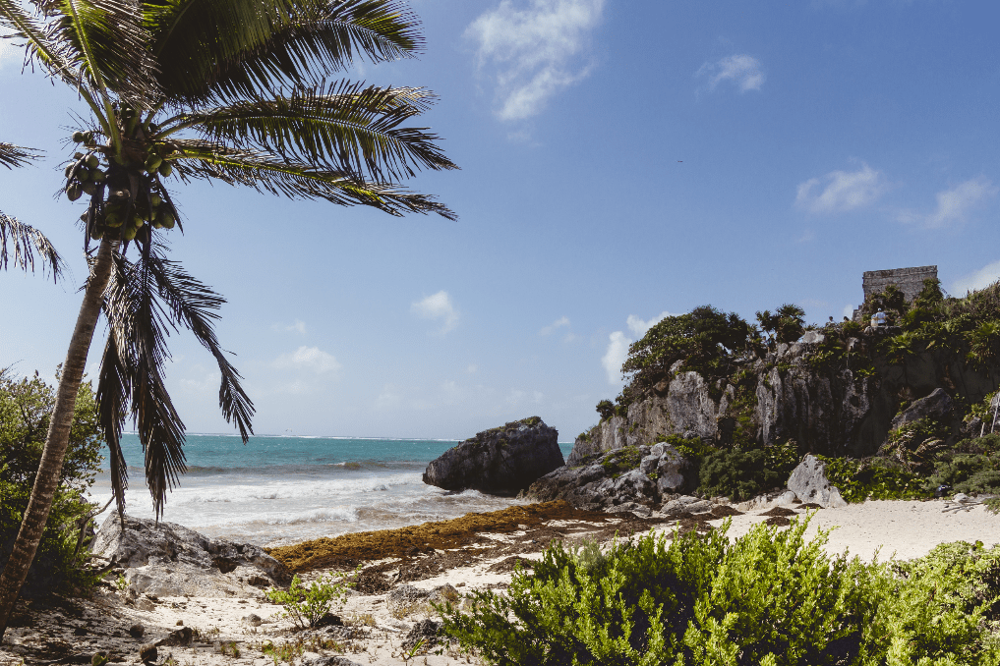
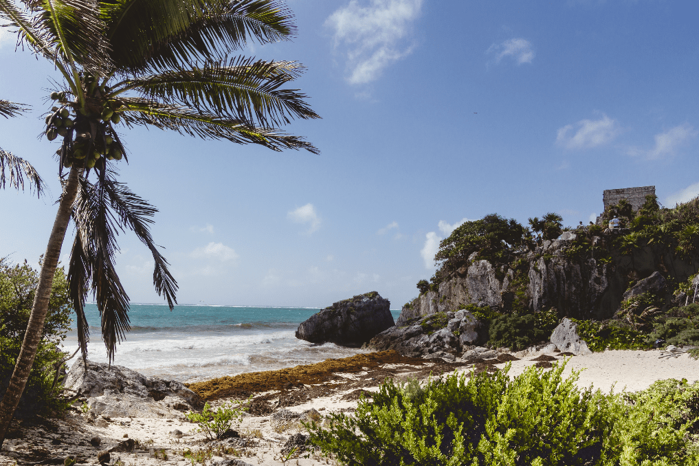

With these things in mind, I wanted to write a blog entirely on the breathtakingly beautiful experience of my recent honeymoon in Tulum, Mexico. For a multitude of reasons I’ve never really traveled much but now I find myself in a position to do so and I am so grateful for the few but amazing places I have seen! Mexico has been one of my top three destinations to go to for awhile now and what could be better than visiting a tropical and cultural paradise? Well seeing it all with my fantastic husband of course! For anyone that hasn’t been before I highly recommend it and it is totally worth the crazy jet lag coming home!
My Tulum top tips!
1. Cenotes! Cenotes! CENOTES! - oh Lordy! These were an experience on another level! I am not a strong swimmer and to anyone else that is not, please don’t let it put you off. The majority of them have equipment you can hire or just borrow for snorkelling and the beauty of them is just awe inspiring!
2. Vegan paradise! - Mexico turned out to be a vegan paradise! Well Tulum at least (not sure about everywhere else). Killian and myself love eating yummy food together and with Kill being vegan we often find ourselves in interesting places and Tulum was chock a block!
3. Bug spray - Pffffft I feel like I got more bites when I put spray on but oh well. You deffo need at LEAST two bottles a week. You are going to the jungle.
4. Tulum town - Tulum is made up of the beach strip and the town, both are pretty touristy but the beach strip is the hipster international capital! We only went into the town once at the end of our time in Tulum and how I wish we’d gone earlier! Sooo much more to see, so much more to eat, and a million times cheaper. Top money saving tip!
 
